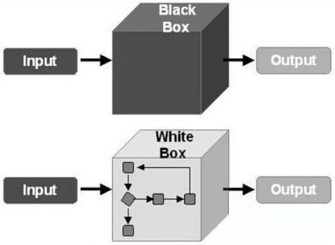
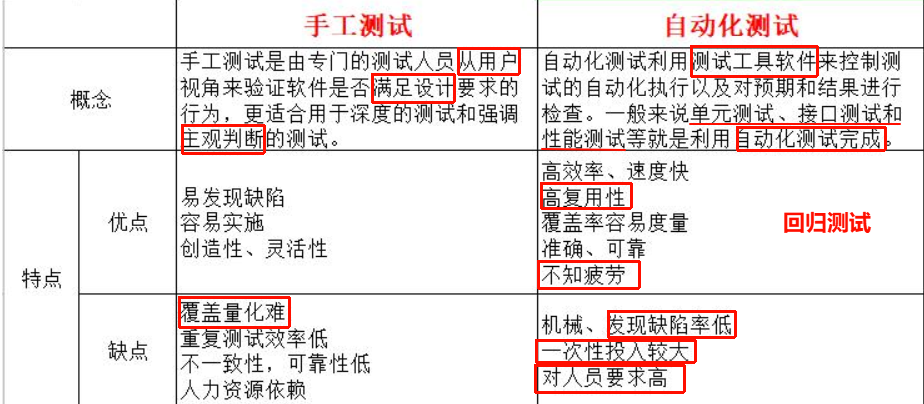
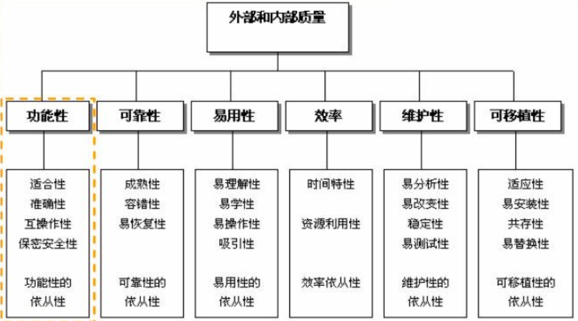

必修：
高级测试基础（文字性-面试时候） 测试牵扯文档：需求文档、测试计划、测试用例、怎么提交bug、测试报告
要求：细致、整洁、格式统一
Web测试
APP测试（adb命令、monkey测试、压力测试）
接口测试（接口文档、postman）
Fiddler抓包工具(没有接口文档)
python开发编程基础
Web自动化测试实战（(python+selenium+unittest)
简历-面试实战与指导 （公开课+模拟面试+简历指导）
选修：mysql、linux
01软件测试概述
软件分类
- 应用软件（通过第三方应用平台去安装应用）
- 系统软件（系统默认会安装的）
1.1软件测试的定义
软件测试的经典定义
- 测试是为发现错误而执行程序的过程
- 软件测试就是软件在投入运行前，对软件需求分析、设计规格说明和编码进行最终复审的活动
IEEE定义
- 使用人工或者自动的手段来运行或者是测量软件系统的过程，以检验软件系统是否满足规定的要求（需求文档），并且找出与预期结果之间的差异
1.2软件测试的目的
1）完善程序，使系统更加符合用户的使用习惯，让系统上线后带给客户极高的用户体验
-
满足用户的使用习惯（行业的约束）
-
满足需求文档
Windows操作系统提供的窗口一般包含哪些元素？ 标题栏、菜单栏、工具栏、工作区、状态栏等
2）测试应致力于发现至今为止未发现的错误
3）从用户的角度出发，希望通过软件测试暴露软件中隐藏的错误和缺陷并减少软件上线后的问题，使得产品更容易被接受。
软件和硬件的环境都要考虑
4）从软件开发者出发，希望测试成为证明产品中不存在错误、已正确的实现用户需求的过程
1.3软件测试的对象
软件测试不等同于程序测试，软件测试贯穿于软件定义和开发整个期间。
软件测试的对象
- 程序：功能正确，性能良好
- 文档：包括用户手册和运维手册，内容完整正确 –帮助文档
- 数据：系统配置文件，符合国家规范
1.4软件测试的原则
1）测试软件存在缺陷
- 测试只能证明软件中存在缺陷，但是不能证明软件中不存在缺陷
- 软件测试是为了降低存在缺陷的可能性
2）穷尽测试是不可能的
测试人员可以根据风险和优先级来进行集中和高强度的测试，从而保证软件的质量。
比如用户常用功能、关于金额的功能（发红包、提现等）
3）测试尽早介入
- 为了保证软件质量，降低风险和成本，测试应尽早介入。
- 测试人员一般在需求阶段就开始介入，使缺陷在需求或设计阶段就被发现。
- 缺陷发现越早，修复的成本就越小。
4）缺陷集群性（2/8原则）
- 一般认为，百分之80的缺陷集中出现在百分之20的核心功能区域。（一旦你再某个功能模块找到缺陷，相关附近功能多半也会存在问题）。
- 主要从下面两点去发现问题
- 功能复杂度：支付功能、新的功能
- 开发的能力：对这块需求懵懵懂懂
- 在写缺陷报告的时候，可以做横向对比，比对类似的功能，相近的模块，版本，机型。指定回归测试策略的时候也可以重点测试。
5）杀虫剂悖论（杀虫剂效应）
如果一直使用相同的测试方法或手段，可能无法发现新的bug。
可以进行随机性测试、交叉测试。
测试用例应当定期修订和评审，增加新的或不同的测试用例，测试人员要不断提升测试方法以提高测试效率。
6）测试活动依赖于测试内容
软件：社交app、oa平台、娱乐项目（看视频、听音乐）等。
根据业务的不同，软件测试内部也分为不同的行业。
比如游戏、电商、金融等。
不同的行业，测试活动的展开都有所不同。
比如测试技术、测试工具的选择、测试流程等都不尽相同。
软件测试的活动开展依赖于所测试的内容。
比如在金融公司测试，安全性就是第一位；电子商务测试，功能性就更重要。
7）不存在缺陷的谬论
软件测试不仅是找出缺陷，同时也需要确认软件是否满足需求。
如果对错误的需求进行了彻底的测试，这样的软件也是不能使用的。
比如需求是开发一个加法计算器，但是实际开发出来的是一个减法、乘法、除法功能都没问题的计算器。
总结
软件测试的定义、目的、对象？
-
什么是软件测试？
-
IEEE：使用人工或自动化的手段，来运行或衡量软件系统质量的过程
-
为什么要进行软件测试？
检验我们的软件是否满足要求（需求文档、站在用户的角度去思考）–期望结果
检验之后得到的结果 –实际结果
确定我们的期望结果和我们实践结果是否一致，是否有差异
-
-
软件测试的目的？
- 一些用户的体验性以及需求相关
- 测试期望发现我们目前为止没有发现问题
- 从用户角度：站在用户使用的场景去进行测试，去发现一些问题
- 从软件开发者的角度：能够正确地去满足我们的需求文档
-
软件测试的对象？
- 程序
- 文档（用户操作手册 –对外开放）
- 数据（基础数据 -城市（当前市场存在）、客户资料（以前一些数据，导入数据的操作））
-
软件测试的原则？
- 测试能证明软件是存在bug的，但是不能证明软件中不存在缺陷。
- 穷尽测试是不可能的。例如计算器。
- 测试需要尽早介入，因为能把成本降到最低。
- bug具有集群性。1.功能块难度系数比较大 2.开发自身的原因
- 避免一直使用相同的测试的测试方法或手段。可以交叉测试，也可以及时更新我们的测试用例
- 测试活动依赖于测试内容。（业务相关）
- 不能说我们的系统没有bug。
02软件的生命周期
软件生命周期概念
软件生命周期是指软件从开始研制到最终被废弃不用的这一整个过程。
软件生命周期包括问题定义及规划、需求分析、系统设计、软件编程、软件测试、软件维护等阶段
计划阶段、需求分析阶段、软件设计阶段、软件编码、测试阶段、部署和维护阶段、升级和淘汰阶段


03常见开发-测试模型
软件开发模型是指软件开发全部过程、活动和任务的结构框架
- 瀑布模型
- V模型
- W模型
- 敏捷开发模型-测试模型
3.1瀑布模型
基本介绍
- 瀑布模型是最早出现的软件开发模型。
- 开发过程是通过设计一系列阶段顺序展开的，从系统需求分析开始直到产品发布和维护，每个阶段都会产生循环反馈。
- 如果有信息未被覆盖或者发现了问题，那么最好“返回“上一个阶段并进行适当的修改。
- 项目开发进程从一个阶段“流动”到下一个阶段，这也是瀑布模型名称的由来。

优点
1）为项目提供按阶段划分的检查点
2）当前一阶段完成后，你只需要关注后一阶段
3）可在迭代模型中应用瀑布模型
4）提供一个模板，这个模板使得分析，设计，编码，测试和支持的方法可以在该模板下有一个共同的指导
缺点
1）各个阶段的划分完全固定，阶段之间产生大量的文档，极大地增加了工作量。
2）由于开发模型是线性的，用户只有等到整个过程的末期才能见到开发成果，从而增加了开发风险。
3）通过过多的强制完成日期和里程碑来跟踪各个项目阶段。
4）瀑布模型的突出缺点是不适应用户需求的变化。
3.2V模型
基本介绍
RAD（Rapid Application Development，快速应用开发）模型是软件开发过程中的一个重要模型，由于其模型构图形似字母V，所以又称软件测试的V模型。
1）在需求分析后就可以写测试计划和编写测试用例；在概要设计后就可以写集成测试用例；在详细设计后就可以写单元测试用例
2）给测试进行了分类：单元测试、集成测试、系统测试、验收测试
优点
1）V模型中的过程从左到右，描述了基本的开发过程和测试行为。
2）它非常明确的表明了测试过程中存在不同的级别，大体划分为以下几个不同的阶段步骤：客户需求分析、软件需求分析、概要设计、详细设计、软件编码、单元测试、集成测试、系统测试、验收测试。
3）能够清楚的描述这些测试阶段和开发过程期间各阶段的对应关系。
缺点
1）V模型仅仅把测试过程作为在需求分析、系统设计及编码之后的一个阶段，忽视了测试对需求分析,系统设计的验证，需求的满足情况一直到后期的验收测试才被验证
2）因此需求变更较大，所以返工量大
3.3W模型
基本介绍
W模型，由Evolutif公司提出，相对于V模型，W模型增加了软件开发各阶段中同步进行的验证和确认活动。

如上图所示，由两个V字型模型组成，分别代表测试与开发过程，图中明确表示出了测试与开发的并行关系。
优点
1）测试的活动与软件开发同步进行
2）测试的对象不仅仅是程序，还包括需求和设计
3）尽早发现软件缺陷可降低软件开发的成本
缺点
1）W模型存在局限性。
在W模型中，需求、设计、编码等活动被视为串行的，并且测试和开发保持着一种线性的前后关系，上阶段完全结束，才能正式开始下阶段工作。
2）无法支持迭代的开发模型。
对于当前软件开发复杂多变的情况，W模型并不能解除测试管理面临的困惑。
3.4敏捷开发模型-测试模型
基本介绍
-
是一种以用户需求进化为核心（强调沟通、弱化文档）、迭代、循序渐进的开发方法。
-
强调以人为本，专注于交付对客户有价值的软件，是一个用于开发和维持复杂产品的框架。
-
就是把一个大项目分为多个相互联系，但也可以独立运行的小项目，并分别完成，在此过程中软件一直处于可使用状态。

敏捷开发原则
1.快速迭代 2.让测试人员和开发者参与需求讨论：开发什么时候做完这个版本、提测 3.编写可测试的需求文档 4.多沟通，尽量减少文档 5.做好产品原型 6.及早考虑测试
优点
1）通过快速、持续地交付有用的软件来满足客户的需求
2）强调的是人和互动，而不是过程和工具。客户、开发人员和测试人员不断地相互作
3）工作软件经常交付(周而不是月)
4）业务人员和开发人员之间的密切日常合作，面对面交谈是最好的交流方式5）持续关注卓越的技术和良好的设计，定期适应变化的环境
缺点
1）快速敏捷软件开发和软件测试
2）不是特别大的团队开发，因为交流成本大，比较适合一个组的团队使用
总结
- 瀑布模型
- 不断循环，当一个节点出现问题，就返回到上一个阶段做适当修改
- V模型
- 从左往右依次进行
- 提出了测试有阶段之分：单元测试、集成测试、系统测试、验收测试
- W模型
- 开发和测试节点一一对应
- 体现了测试的对象除了程序，还有文档、数据
- 敏捷开发-测试模型
- 把一个大项目分成很多小项目，能让产品更快速地进行迭代，让用户更快地看见需求
04测试分类
- 按测试技术划分
- 白盒测试、黑盒测试、灰盒测试
- 按测试阶段划分
- 单元测试、集成测试、系统测试、验收测试（正式验收测试、Apha测试、Beta测试)
- 被测试对象是否运行划分
- 动态测试、静态测试（文档检查、代码走查、界面检查）
- 按不同的测试手段划分
- 手工测试、自动化测试
- 按软件质量特性内容划分
- 功能测试（界面测试）、可靠性测试、易用性测试、性能测试（负载测试、压力测试、并发测试、稳定性测试）、兼容性测试
- 其他测试
- 冒烟测试、回归测试、探索性测试(测试思维)
4.1按测试技术划分
白盒测试、黑盒测试、灰盒测试
黑盒测试：（功能测试）不关心软件内部，只关心输入输出，主要测试依据是需求文档。–测试人员
白盒测试：关心软件内部设计和程序实现，主要测试依据是设计文档。–开发人员

灰盒测试介于白盒测试与黑盒测之间的测试。（接口测试）
灰盒测试关注输出对于输入的正确性；同时也关注内部表现，但这种关注不像白盒测试那样详细、完整，只是通过一些表征性的现象、事件、标志来判新内部的运行状态。
灰盒测试结合了白盒测试和黑盒测试的要素。
4.2按测试阶段划分
单元测试、集成测试、系统测试、验收测试是“从小到大”、“由内至外”、“循序渐进”的测试过程，体现了“分而治之”的思想。

确认测试就是在系统测试之前进行二次确认。
单元测试是开发者编写的一小段代码，用于检验被测代码的一个很小的、很明确的功能是否正确。通常而言，一个单元测试是用于判断某个特定条件（或者场景）下某个特定函数的行为。
集成测试是单元测试的逻辑扩展。它的最简单的形式是：两个已经测试过的单元组合成一个组件，并且测试它们之间的接口。
系统测试是将经过测试的子系统装配成一个完整系统来测试。它是检验系统是否确实能提供系统方案说明书中指定功能的有效方法。系统测试的目的是对最终软件系统进行全面的测试，确保最终软件系统满足产品需求并且遵循系统设计。
测试通过和不通过：为什么不通过？–还有bug –修改bug –（回归测试：当测试出现问题的时候，开发进行修复并且给到新的安装包，测试人员进行验证并且没有发现新问题，直至没有新问题产生）
验收测试是部署软件之前的最后一个测试操作。验收测试是向未来的用户表明系统能够像预定要求（需求文档）那样工作。包括正式验收测试、alpha测试、beta测试三种测试
- Beta testing (β测试)
- 测试是软件的多个用户在一个或多个用户的实际使用环境下进行的测试。开发者通常不在测试现场。因而，β测试是在开发者无法控制的环境下进行的软件现场应用。 –预生产环境、灰度测试、白名单
- Alpha testing (α测试)
- 是由一个用户在开发环境下进行的测试，也可以是公司内部的用户在模拟实际操作环境下进行的受控测试。
4.3被测试对象是否运行划分
动态测试、静态测试（文档检查、代码走查、界面检查）
静态测试 (static testing)就是不实际运行被测软件，而只是静态地检查程序代码、界面或文档中可能存在的错误的过程。如：检查代码、界面和文档
动态测试 (dynamic testing)指的是实际运行被测程序，输入相应的测试数据（操作），检查实际输出结果和预期结果是否相符的过程。
所以判断一个测试属于动态测试还是静态的，唯一的标准就是看是否运行程序。
4.4按不同的测试手段划分
手工测试、自动化测试

4.5按软件质量特性内容划分
功能测试（界面测试）、可靠性测试、易用性测试、性能测试（负载测试、压力测试、并发测试、稳定性测试）、兼容性测试
软件质量是许多质量属性的综合体现，各种质量属性反映了软件质量的方方面面。通过改善软件的各种质量属性，从而进一步提高软件的整体质量。
ISO9126质量模型：软件质量模型的6大特性和27个子特性。

功能性、可靠性、易用性、效率、维护性、可移植性
功能测试：功能测试时根据产品的需求规格说明书，和测试需求列表，验证产品的功能实现是否符合产品的需求规格
- 适合性：是否提供了相应的功能
- 准确性：是不是正确 (是不是满足用户需要的)
- 互操作性：产品与产品之间交互数据的能力。案例：微信：发朋友圈-照片 (拍照，相册)
- 保密安全性：允许经过授权的用户和系统能够正常的访问相应的数据和信息，禁止未授权的用户访问.….
- 功能性的依从性：国际/国家/行业/企业标准规范一致性
可靠性测试：可靠性测试就是为了评估产品在规定的寿命期间内，在预期的使用、运输或储存等所有环境下，保持功能可靠性而进行的活动
- 成熟性：防止内部错误导致软件失效的能力
- 客容错性：软件出现敌障（包含外部错误），自我处理能力（能否自行解决）。
- 易恢复性：失效情况下的恢复能力，能否恢复到出错之前的应用
- 可靠性的依从性
易用性测试：是指用户使用软件时是否感觉方便，比如是否最多点击鼠标三次就可以达到用户的目的。易用性和可用性存在一定的区别，可用性是指是否可以使用，而易用性是指是否方便使用。易理解性（是不是容易被用户理解)
- 易学性 (是不是容易学习)
- 易操作性 (好不好操作)
- 吸引性 (是不是吸引用户)
- 易用性的依从性
性能测试：就是用来测试软件在集成系统中的运行性能的。 性能测试又包括：负载测试（不断的去压榨，看你最大的承受能力）、压力测试（不断的去压榨，看你什么时候奔溃）、并发测试 （同一时间多个数据进行发送，看服务器能否正常处理）、稳定性测试（长时间的运行，看系统是否稳定）
- 时间特性：平均事务响应时间，吞吐率，TPS（每秒事务数）–对事物的处理能力好不好，反应快不快，相同的时间内能够处理多少数据，每一次能够处理多少个请求。
- 资源利用性：软件运行的时候，占用服务器的资源有多少（主要是对CPU、内存、磁盘、IO、网络带宽队列、共享内存的占用），如果占用资源很大，会影响到用户其他的软件使用，不容易接受。
- 效率依从性
维护性：“四规"，在规定条件下，规定的时间内，使用规定的工具或方法修复规定功能的能力
- 易分析性：分析定位问题的难易程度 (是否容易对问题进行分析和定位)
- 易改变性：软件产品使指定的修改可以被实现的能力 (是不是容易被修改，添加一些可实现的功能)
- 稳定性：防止意外修改导致程序失效（能不能够防止一些误操作导致程序失效）。
- 易测试性：使已修改软件能被确认的能力(已经修改的软件功能，好不好检测及确认正确与否)
- 维护性的依从性
前台 – 面向用户 –数据（从数据库里面拿到的）
后台管理系统 –管理人员去使用 –操作-新建商品 -放到数据库
兼容性测试：兼容性测试验证被测对象与其他软件之间的兼容情况。不同的浏览器，不同的设备、不同的操作系统之间的兼容
- 适应性：适应不同平台（能不能适应不同的操作系统OS，linux、mac、windows等)
- 易安装性：被安装的能力 (软件是不是容易被安装)
- 共存性(与其他的软件能否共存，如果安装了这个软件，其他的软件就使用不了，势必会被淘汰)
- 易替换性 (软件是不是容易被其他的产品替代，不易替换更好)
- 可移植性的依从性
4.6其他测试
冒烟测试、回归测试、探索性测试(测试思维)
冒烟测试：是在正规测试一个新版本之前，投入较少的人力和时间验证基本功能，通过则测试准入，冒烟测试目的是确认软件基本功能正常。
冒烟测试的测试用例是从系统·测试提取部分出来
- 执行者：版本编译人员或者测试人员
- 开发-版本-自测（基本功能OK）-提交测试（冒烟测试-通过/不通过-通过系统测试）
回归测试：回归测试是指修改了旧代码后，重新进行测试以确认修改没有引入新的错误或导致其他代码产生错误。自动回归测试将大幅降低系统测试、维护升级等阶段的成本。
在整个软件测试过程中占有很大的工作量比重，软件开发的各个阶段都会进行多次回归测试。
执行者：测试人员
任务： 1：验证提交bug是否有修改; 2：验证修改bug之后有没有引入新的bug ;
形式： 1：部分公司直接发布版本，进行专门的回归测试; 2：部分公司在每个版本正式测试之前先进行回归测试，再进行正式测试
探索性测试：探索性测试可以说是一种测试思维技术。强调测试人员的主观能动性，抛弃繁杂的测试计划和测试用例设计过程，强调在碰到问题时及时改变测试策略。
- 执行者：测试人员
- 测试后期，测试时间比较充裕的情况下
总结

05测试工作流程
软件的生命周期：计划阶段、需求分析阶段、软件设计阶段、软件编码、测试阶段、部署和维护阶段、升级和淘汰阶段
5.1软件测试工作流程
软件测试是个复杂的过程，其涉及着大量的人员安排、资源准备、工作活动分配、工作活动实施、工作进度监控等。稍有疏漏就会影响测试工作的开展，进而影响到整个项目进度和产品质量的检测。那真正规范的测试流程到底是怎样的呢？
规范的测试流程阶段划分：
- 需求评审阶段
- 测试计划阶段
- 测试设计阶段
- 测试执行阶段
- 测试评估阶段
你上家公司测试流程是什么样的？用白话串起来说
我上家公司的流程，首先是我们的产品经理会把我们的需求给。把需求提出来之后呢，他会得到一个需求规格说明书，那拿到这个需求规格说明书之后，我们的开发和我们的测试会去参加我们的需求分析，在需求分析的过程当中，我们可能评审会议当中，我们可能会提出对应的一些问题啊，或者建议，这时候我们产品如果说。对我们提出的建议或者意见，他已收纳了，那这个时候我们就他会把这个需求文档啊，这个需求文档去进行更新，更新完了之后我们拿到一个确认版本的一个需文档啊。已经确认的一个文档，那拿到这个文档之后呢？开发那边他会根据我们的文档去写，我们的开发计划，那我们测试这一边就会根据我们这个文档和结合我们的开发这一边的文档。去写我们的测试计划，当我们测试计划去写出来了之后，是我由我们的测试组长写出来的，写完了之后，我们每一个测试人员，就会对自己的分配的任务去进行一个了解，那什么时候该做什么事情，那我们都是会非常的清楚那。那在这个测试计划的当中，可能会有一些安排不妥当的地方，那我们会在这个时候给他提出来，那如果说没有问题的话，那我们就会进入到下一个阶段。
那下一个阶段就是大家针对自己在测试计划当中表露出的一些内容，比如说写测试用例啊啊，测试环境的一些准备啊，以及我们测试的一些数据的准备啊。。。。

5.2需求评审阶段
1.需求评审阶段
-
评审软件需求，提出需求中存在的问题或建议
-
参考文档：软件需求规格说明书
-
任务：评审软件需求
-
责任人：测试经理或组长或资深测试工程师
-
目的：评审软件需求规格说明书，提出文档中的问题
-
工作描述：项目经理、开发、测试等团队派代表参与软件需求评审，站在自身的角度提出需求中存在的问题或建议，产品如果采纳进行修复，修复后的软件需求规格说明书将做为开发和测试的参考。
5.3测试计划阶段
2.测试计划阶段
-
主要任务是编写测试计划，内容包括测试范围、进度的安排，人力物力的分配，整体测试策略的指定，和风险的评估与规避措施有一个指定
-
参考文档：软件需求规格说明书、项目总体计划、项目开发进度表
-
任务：编写测试计划
-
责任人：测试经理或组长或资深测试工程师
-
目的：通过计划指导后续测试活动有序进行
-
工作描述：编写测试计划明确测试范围、测试资源准备（硬件、测试工具等）、团队工作安排和进度、交付物
5.4测试设计阶段
- 主要任务是对负责内容进行需求分析、用例设计、用例评审、用例修改等工作
- 参考文档：产品需求文档（原型图）、概要设计、详细信息设计、数据库设计等文档，有不明确的也会及时和开发、产品经理沟通
任务1：需求分析
- 责任人：测试工程师
- 目的：获取测试需求，确定测试项、测试子项
- 工作描述：根据软件需求、软件设计等研发类文档，从功能、性能、接口等多维度分析测试项、测试子项。
任务2：用例设计、用例评审、用例修改
- 责任人：测试工程师
- 目的：设计测试用例指导测试执行，参与用例评审，负责用例修改
- 工作描述：测试人员运用合适的用例设计方法，进行测试用例的设计和编写工作，完成所有被测试系统的测试用例工作。参与团队用例评审，提出意见或建议，对用例进行维护和修改的工作
5.5测试执行阶段
4.测试执行阶段
- 主要任务是搭建测试环境、执行测试用例和提交缺陷报告的工作
- 参考文档：测试环境搭建指导文档、测试用例、缺陷规范
任务1：搭建测试环境
- 责任人：测试工程师
- 目的：准备测试环境，为执行测试做准备
- 工作描述：测试人员根据开发人员提供的《软件安装指导书》，完成测试环境搭建。测试人员搭建测试环境同时，要完成《软件安装指导书》的测试验证。
任务2：执行测试用例
- 责任人：测试工程师
- 目的：测试执行
- 工作描述：测试人员执行自己负责模块的测试用例，执行同时要标记每个测试用例的执行结果。
任务3：提交缺陷单报告
- 责任人：测试工程师
- 目的：提交缺陷信息给开发人员
- 工作描述：测试人员执行测试用例时，如果发现缺陷，需要按照标准格式编写缺陷单，并跟踪缺陷解决情况和进度。
任务4：回归测试
- 责任人：测试工程师
- 目的：确认缺陷是否解决
- 工作描述：开发解决完缺陷后，提交新的软件版本，测试人员要确认提交的缺陷是否得到了有效解决，并确认未引入新的缺陷。
任务5：优化测试用例
- 责任人：测试工程师
- 目的：根据执行反馈调整测试用例
- 工作描述：在执行了测试过程中，可能会发现测试用例有部分冗余、不合适、缺少的，利用版本间歇期优化测试用例。
5.6测试评估阶段
5.测试评估阶段
- 出测试报告，对整个测试的过程和版本质量做一个详细的评估，确认是否可以上线。
- 参考文档：测试用例执行结果、缺陷总表单
任务：测试报告
- 责任人：测试经理或测试组长
- 目的：对整个测试总结和结果的评估
- 工作描述：在整个测试结束后，需要对整个测试工作和软件质量进行总结。测试报告主要包含：实际测试环境、测试过程数据的总结和分析、测试遗留缺陷处理、软件版本质量的评估、后续测试建议、测试结论。
06软件测试计划的编写
6.1测试计划概述
定义
测试计划是一个叙述了预定的测试活动的范围、途径、资源及进度安排的文档（word、excel）。它确认了测试项、被测特征、测试任务、人员安排，以及任何偶发事件的风险。测试计划可以有效预防计划的风险，顺利实施。
目的
- 了解项目和测试活动的整体情况
- 明确职责分工，便于沟通和协作
- 明确测试活动的对象、范围、方法、进度和预期结果等资源统筹配置，以保证其可获得性、有效性。
- 明确自身和团队的测试任务以及测试成功的标准、要实现的目标
- 风险管控和消除可能存在的风险，降低由不可能消除的风险所带来的损失。
- 有利于对项目和测试活动进行宏观调控
6.2制定测试计划的步骤
1.任务到达
- 测试负责人接到软件测试任务书和被测软件的需求说明，开发的进度表
2.分析测试任务
- 充分理解被测试软件的需求
- 评估被测软件的进度、状态、复杂度和潜在风险
3.资源规划和配置
- 组建测试团队
- 准备各种非人力资源
4.制定测试计划
- 研究确定测试计划的各项内容
5.评审测试计划
- 测试团队共同参与评审测试计划
6.3测试计划核心内容

确定测试范围和风险，明确测试目标
确定总体的测试方法
确定测试什么？测试由什么角色来执行？如何测试？
为测试的设计、实施和评估安排时间进度
为确定的测试活动分配资源
6.45W1H方法
1.WHAT ——对象
- 测试什么？
- 做什么类型的测试？
- 被测软件的特点是什么?
- 在什么环境下测试?
2.WHY ——原因
- 为什么要做性能测试？
- 为什么重点测试这个部分？
3.WHO ——参与人
- 软件的最终用户是谁？
- 谁来设计测试用例?
- 谁来执行测试用例?
4.WHEN ——时间
- 什么时候开始测试?
- 什么时候提交缺陷报告?
- 什么时候结束测试?
5.WHERE ——场所
- 在哪里进行测试？
- 测试软件的哪个版本?
- 测试到哪里算是完成？
6.HOW ——方式
- 如何进行测试？
- 如何管控风险?
- 如何控制项目进度？
总结
步骤：
写计划之前：
1.拿到需求（A,B,C）-任务到达
2.分析测试任务：A - … B - … C - …
3.计划需要哪些东西？资源规划和配置
4.制定测试计划（word、excel）
5.评审测试计划
内容：
测试项（测试范围）、被测特征、测试任务、谁执行任务、各种可能的风险
5W1H
- WHAT -什么：测试哪些方面、不同任务的工作内容、做什么类型类型的测试？在什环境进行测试？ -对象
- WHY -为什么：为什么要做这些测试－原因
- WHO -谁：参与人：谁用、谁来测试用例、执行测试用例、项目团队的其它人
- WHEN -当什么时候去做呢？ 测试不同阶段的起止时间
- WHERE-在哪里做？bug 写哪里？ 测试环境是哪里？
- HOW -如何去做 –比如测试策略、风险把控、

UAT绝大多数做的是系统测试，UAT完成后，用户到我们开发环境进行验收，即alpha测试。用户测试也没有问题了，就可以投入到预生产环境中做beta测试
07需求分析
7.1软件测试需求分析的概述
什么是需求？
需求是产品必须完成的事以及必须具备的品质。需求包括：功能性需求、非功能性需求和限制条件.
-
功能性需求：功能性需求是产品必须完成的那些事，要求一定的功能和品质。
- 案例：微信可以给好友发消息、发红包、发语音和视频等操作 – 产品考虑的一些点，必须完成这些功能
-
非功能性需求：非功能性需求是产品必须具备的属性或品质。诸如观感、可用性、安全性和法律限制等。
-
例子：×平台用户数为5万人，每天登录用户数为1万左右，网络的带宽为100M带宽。在工作时间根据资料名称条件进行搜索，可以在3秒内得到搜索结果。–性能数据
-
2021年天猫活动的订单处理峰值达高于58.3万笔/秒，要求订单成功率为100%
-
注意：在项目中一般优先分析功能性需求（满足需求），产品的功能确定之后再分析非功能性需求。
-
-
限制条件：在需求分析中需要考虑一些条件约束，规则等，比如客户的约束，行业的约束，法律的约束以及自己的约束。
- 例如：客户需求：x平台必须在2021年开学的第一学期上线
需求分析的重要性
- 符合尽早介入测试、文档也需要测试原则
-
是设计测试用例的重要依据，有助于保证测试的质量和进度
-
是衡量测试覆盖率的重要指标。
-
测试覆盖率：覆盖需求文档中描述的所有功能点的正确与否
- 比如：需求10个功能点：正确流程、错误流程–100%
- 需求10个功能点：正确流程–50%
- 需求10个功能点：100个用例，包含9个功能点，正确流程、错误流程–90%
怎么提高你测试用例的覆盖率？
1.需要熟悉需求，读懂需求，并根据需求把所有功能点正确与否都要考虑到位
2.写完测试用例后，要评审用例
如何进行需求分析
测试需求分析的主要目的：根据需求文档提取测试点，根据测试点来编写测试用例。
需求分析步骤：
-
熟悉需求背景及商业目标
-
找出功能性需求与约束：
-
单个功能，如能否登录，等否发送信息;
-
功能交互;
-
业务流程，如登录成功-给好友发送红包-好友领取红包
-
-
找出非功能性需求与约束:
- UI、性能、网络、兼容性、易用性、特殊情况
7.2项目需求分析实战演练
案例1-根据需求文档提取测试需求点
即时贴功能描述需求分析

案例2-没有需求文档时提取测试需求点
电商商城注册功能需求分析

案例3
生活物品测试需求分析，如：杯子、笔、桌子
面试题：怎么对杯子、笔、桌子进行测试？讲出测试的思维？测试点?
软件测试六大特性:
- 功能性–需求：正确场景、异常场景
- 易用性–用户角度：删除是否提示
- 安全性– 密码的安全性
- 兼容性–是否OK
- 效率性–性能相关、应用性
- 可维护性
总结
-
什么是需求？
- 需求是产品必须完成的事以及必须具备的品质
-
需求包含的内容？
- 三部分：功能性需求、非功能性需求、限制条件
-
需求分析 - xmind
-
需求分析的步骤
- 熟悉需求背景和商业目标？–用户去使用–社交APP、电商平台（注册、登录、选商品、下单、发货、收货…）－-竞品
- 找出功能性需求和约束
- 单个功能：登录、注册、个人中心、主页
- 功能交互：注册完的用户进行登录
- 业务流程：整个业务流程去进行分析
- 做一些非功能需求
- UI（设计图）、性能、网络（弱网测试）、兼容性测试（web：不同操作系统、不同的浏览器；app：不同ios版本、安卓版本；不同的系统及安卓版本）
- 易用性（站在用户的角度去发现是不是好用）、其它情况
-
需求分析
- 有文档、没有文档
7.3用例设计方法-等价类
7.4用例分析项目实战
7.5用例设计方法-边界值
08用例设计
用例设计方法-等价类 用例分析项目实战 用例设计方法-边界值